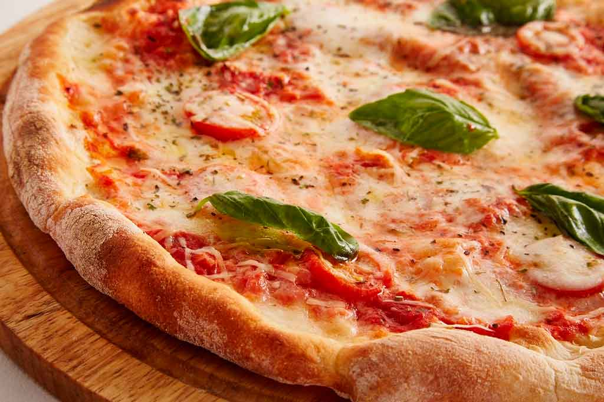
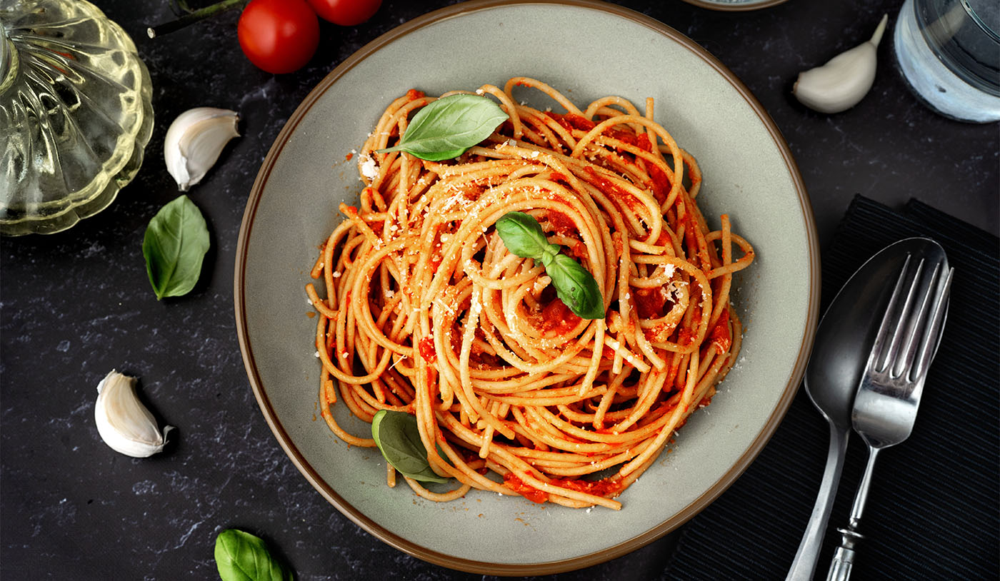

Quem Somos

Desde a sua fundação, o Martini Joseph busca unir tradição, sofisticação e autenticidade em cada experiência gastronômica.
Inspirados pelos sabores clássicos da Itália, selecionamos ingredientes de alta qualidade e receitas que atravessam gerações.
Mais do que um restaurante, somos um destino para quem aprecia excelência, elegância e momentos inesquecíveis à mesa.
Nossa Gastronomia

Lasanha Artesanal
Camadas delicadas de massa fresca, molho artesanal e queijos selecionados, preparados na tradição italiana.

Pizza Italiana
Massa de longa fermentação, ingredientes frescos e sabores autênticos inspirados nas tradicionais pizzarias de Nápoles.

Spaghetti Clássico
Spaghetti envolvido em molho especial da casa, finalizado com ervas frescas e o verdadeiro sabor da Itália.
O que nossos clientes dizem
"A melhor experiência italiana que já tive."
⭐⭐⭐⭐⭐
— Maria S."Ambiente elegante e pratos incríveis."
⭐⭐⭐⭐⭐
— Carlos R."Perfeito para ocasiões especiais."
⭐⭐⭐⭐⭐
— Fernanda M.Horário de Funcionamento
Segunda à Sexta • 18h às 23h
Sábado e Domingo • 18h às 00h